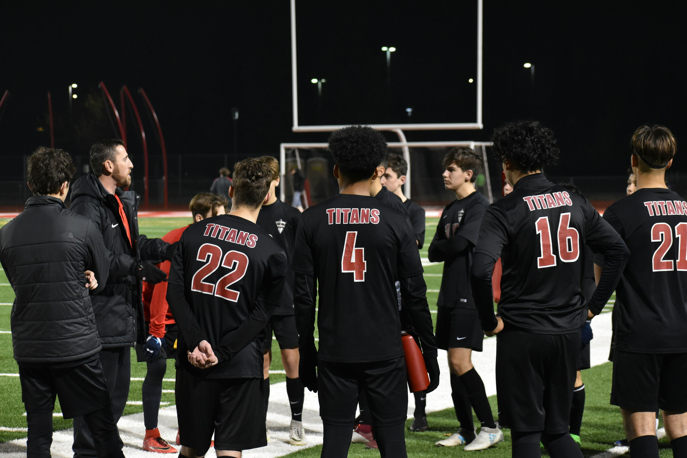
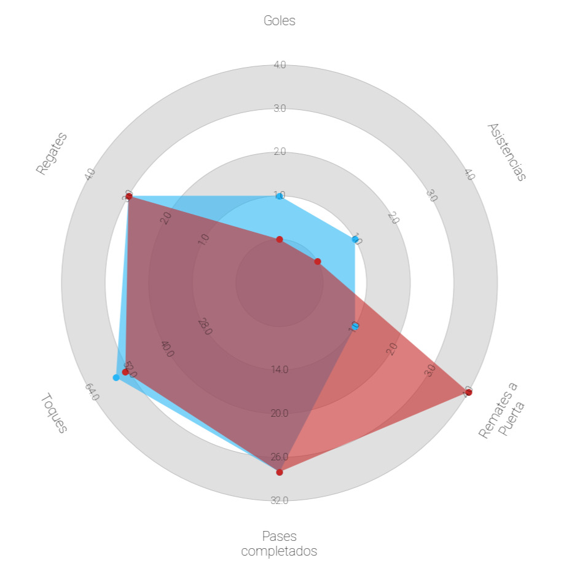

Rol Athlead · Entrenador
Como entrenador, Athlead es tu bloc de notas digital: un lugar donde guardar jugadores, revisar jugadas clave y tomar mejores decisiones de captación.
Herramienta para entrenadores
En lugar de tener capturas de pantalla, enlaces sueltos y notas en el móvil, Athlead te permite guardar y ordenar perfiles de jugadores que te interesan.
Guarda jugadores en listas personalizadas: “para pretemporada”, “pruebas U19”, etc.
Revisa rápidamente jugadas ofensivas, defensivas o de transición según lo que quieras evaluar.
Compara distintos jugadores de la misma posición viendo sus jugadas una detrás de otra.
Ten siempre contexto: edad, equipo, rol táctico y zona donde juega.


Athlead está pensado para entrenadores de fútbol base y amateur que quieren ir un paso más allá en cómo miran el talento, pero sin convertirse en analistas a tiempo completo.
Acceso rápido a jugadas clave sin tener que pedir vídeos enteros a cada jugador.
Mejor comunicación con la dirección deportiva: puedes compartir perfiles concretos.
Ideal para entrenadores que, además de entrenar, también seleccionan jugadores.
Todo organizado en un único lugar, accesible desde el móvil.